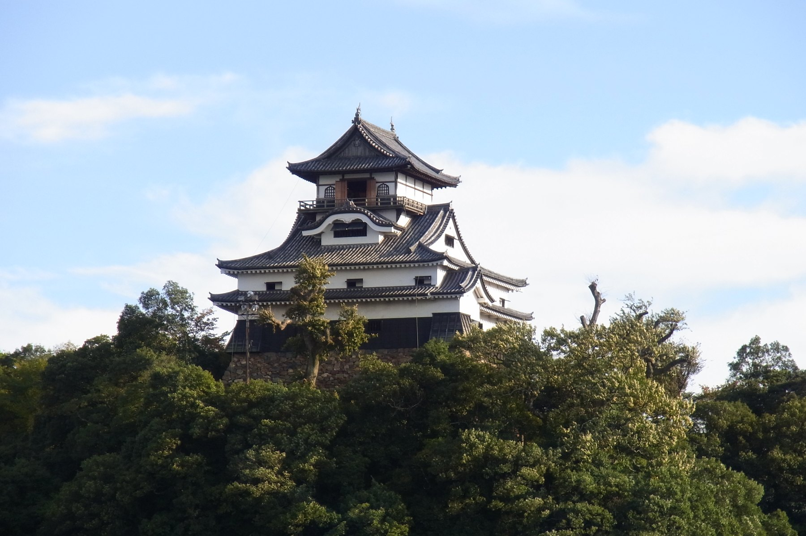
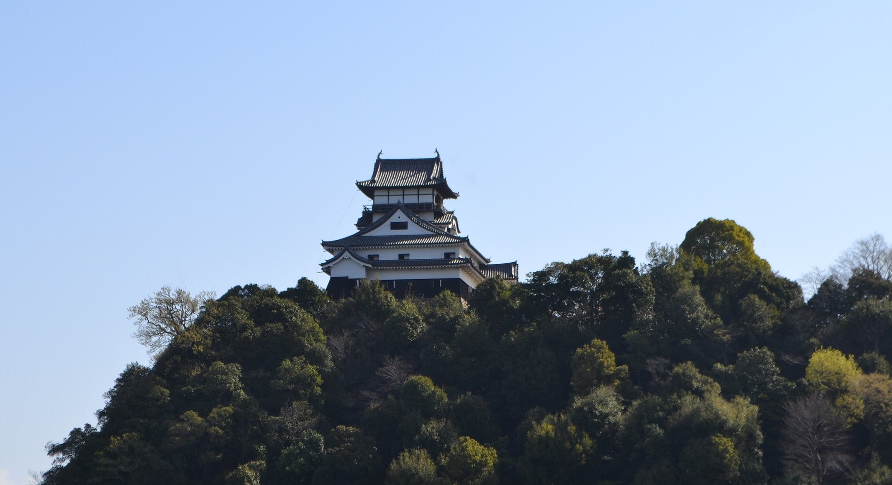
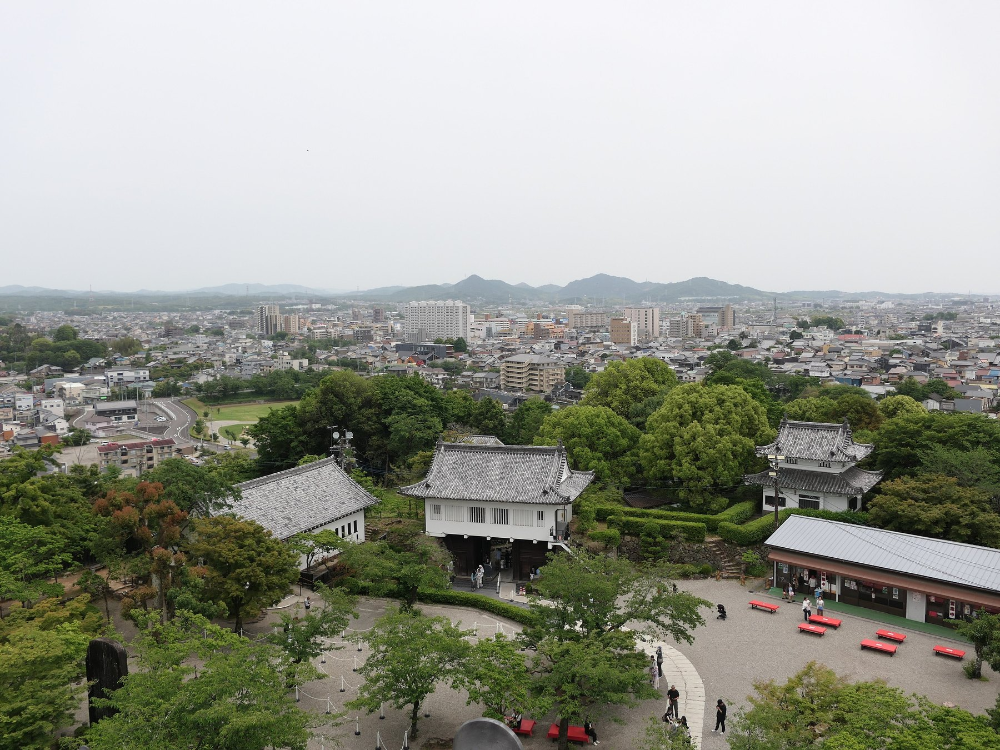
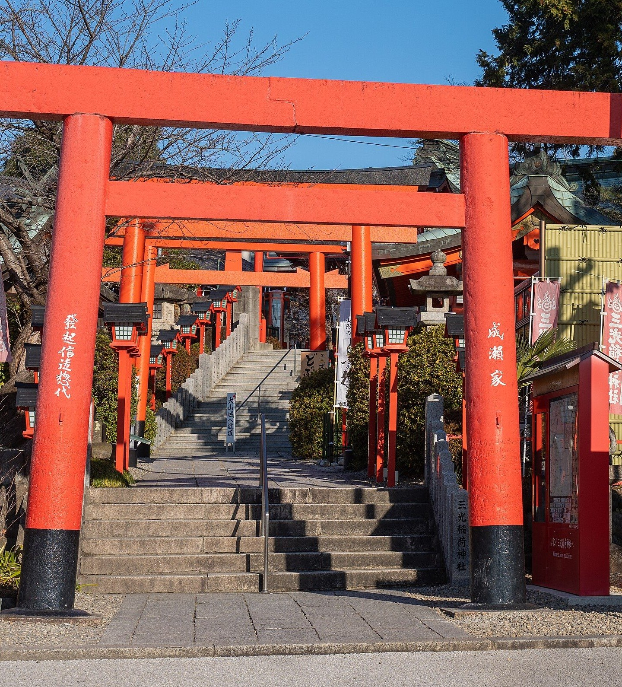
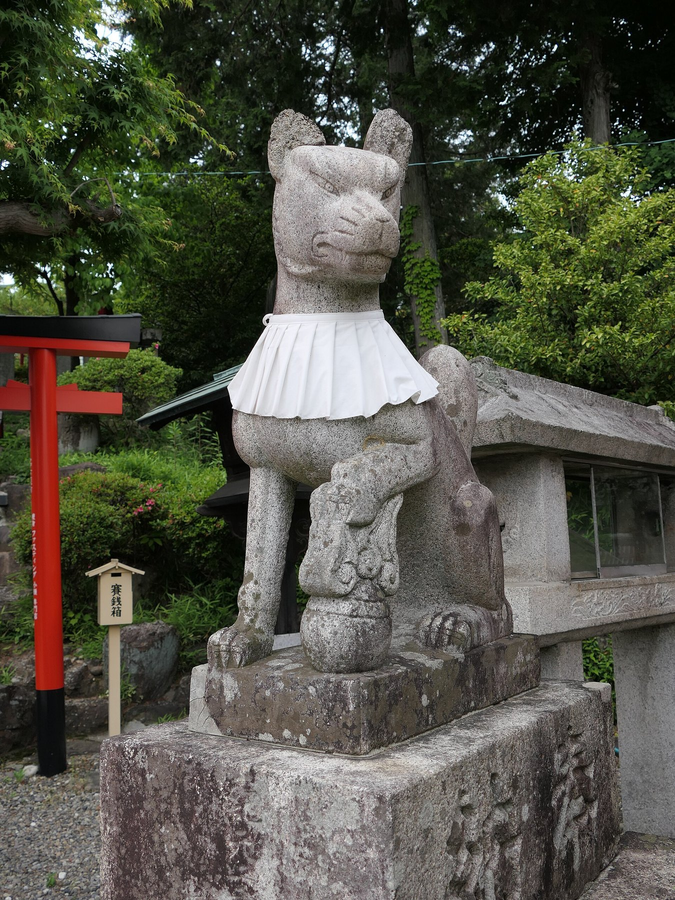
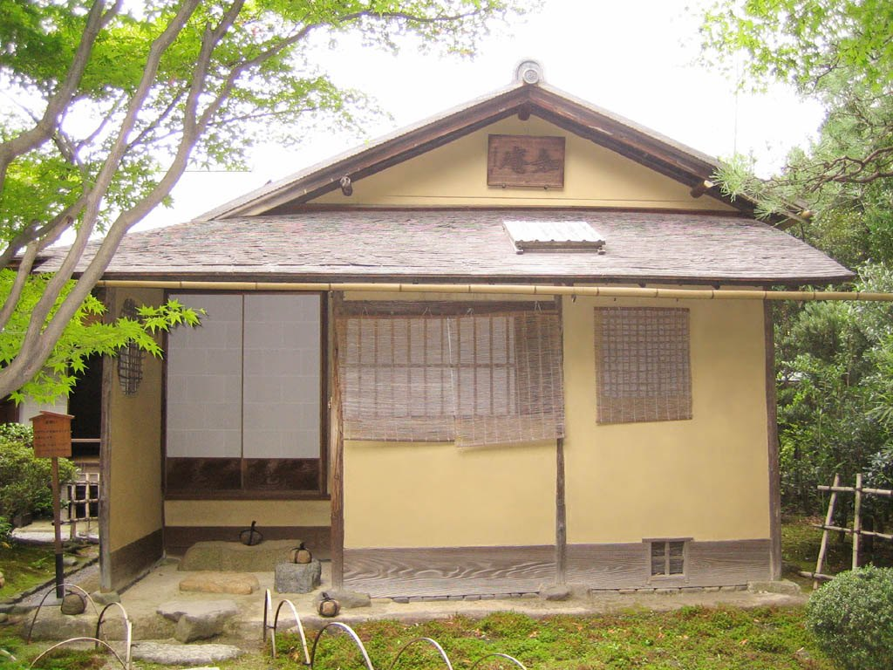

木曽川を見下ろす、小さな天守。
国宝五城でいちばん小さく、いちばん古い――
「大きさではない」ことを教えてくれる城を歩く一冊。
本書に掲載の料金・開館時間・公開状況は、変動する可能性があります。
おでかけの前には、必ず各施設の公式サイトで最新情報をご確認ください。
国宝犬山城 公式サイト:https://inuyama-castle.jp/
| 名称 | 犬山城(いぬやまじょう)／別名 白帝城〈はくていじょう〉 |
|---|---|
| 所在地 | 愛知県犬山市犬山北古券65-2 |
| 種別 | 建造物(城郭・天守) |
| 国宝指定 | 1935年(昭和10年)旧国宝 → 1952年(昭和27年)国宝 |
| 天守 | 三重四階地下二階の望楼型。高さ約19m |
| 創建 | 天文6年(1537年)頃、織田信康による築城と伝わる |
| 現在の姿 | 1617年(元和3年)以降、成瀬正成による改修 |
国宝五城のなかで、犬山城は最も小さな城です。しかし小さいことには理由があり、 その理由を知ると、この城が全く違って見えてきます。本書はその「理由」を追いかける一冊です。
犬山城は天文6年(1537年)頃、織田信康――織田信長の叔父にあたる人物が 築いたと伝わります。木曽川に臨む小高い丘。ここは尾張と美濃を隔てる境目であり、 川を渡る者を見張る場所でした。城の役割は、はじめから川と結びついています。
1584年(天正12年)、羽柴秀吉と徳川家康・織田信雄が対峙した小牧・長久手の戦い。 このとき秀吉方の池田恒興が木曽川を渡って犬山城を奪い、秀吉方の重要拠点となりました。
守るはずの川を、逆に渡られて落ちた――天然の要害も、使われ方ひとつで意味が変わることを示す一幕です。
江戸時代に入り、1617年(元和3年)、尾張藩の付家老(つけがろう)である成瀬正成が 城主となります。正成は天守に大きく手を入れ、現在見られる姿をかたちづくりました。 以後、成瀬家が明治まで代々城主を務めます。
この城を「白帝城」と称したのは、江戸中期の儒学者荻生徂徠(おぎゅうそらい)と 伝わります。中国の詩人・李白が長江の畔で詠んだ「白帝城」になぞらえたもの。 木曽川を長江に見立てた、風雅な見立てです。

明治維新後、犬山城は廃城となり、愛知県の所有となります。 そこへ襲ったのが、1891年(明治24年)の濃尾地震でした。 マグニチュード8.0を超える内陸地震で、天守は半壊します。
県には修復する力がありませんでした。そこで1895年(明治28年)、 「修理を行うこと」を条件に、旧藩主の成瀬家へ城が譲られます。 成瀬家と犬山の町民が義援金を募り、天守は修復されました。
ここでも、城を残したのは町の人々でした。
こうして犬山城は成瀬家の所有となり、以後およそ100年、 「全国で唯一、個人が所有する城」として知られることになります。
2004年(平成16年)、成瀬家が設立した財団(現・公益財団法人 犬山城白帝文庫)へ 所有が移り、現在に至ります。文化財としての保存を長期にわたって続けるための移管でした。
1959年(昭和34年)、伊勢湾台風が東海地方を襲います。 犬山城も屋根瓦が飛ばされ、漆喰が剥がれるなど大きな被害を受けました。
このときも城は見捨てられませんでした。被災した天守は4年の歳月をかけて解体修理され、 現在の姿を取り戻しています。
犬山城が乗り越えたのは、戦ではなく自然災害でした。 そのたびに修理を引き受けたのが、城主家と地元の人々だったという事実が、 この城の来歴を特別なものにしています。小さな城が四百年以上残っているのは、 偶然ではありません。
犬山城の天守は三重四階地下二階の「望楼型(ぼうろうがた)」です。
望楼型とは、入母屋屋根の建物の上に、物見のための望楼を載せた形式のこと。 下の階と上の階が、別の建物を積み重ねたような構成になります。これは天守が生まれた初期の姿で、 時代が下ると、各階を規則的に積み上げる層塔型(そうとうがた)が主流になっていきます。
つまり犬山城の天守は、天守という建築がまだ完成形を模索していた時代の姿を 残しているのです。姫路城の整然とした連立式天守と見比べると、その違いがよく分かります。
天守を支える石垣は、自然石をほぼ加工せずに積み上げた野面積み(のづらづみ)。 隙間だらけで粗く見えますが、これも古い時代の技法です。
姫路城では、時代とともに切込接ぎへ進歩する様子が読み取れました。 犬山城の石垣は、その進歩が始まる前の段階を見せてくれます。
最上階には、外周を巡る回縁(まわりえん)と手すりの高欄(こうらん)が あります。ここに出ると、北に木曽川と山地、南に濃尾平野が広がる大展望が開けます。
ただし――高欄は驚くほど低いのです。手すりの高さは、現代の感覚では心もとないほど。 足がすくむ人も少なくありません。これも、安全基準という発想がなかった時代の建築を そのまま残しているということです。
犬山城が小さいのは、大きくする必要がなかったからでもあります。 北側は木曽川に落ちる断崖。堀を掘る必要も、高い石垣を積む必要もありません。 地形そのものが防御だったのです。
前ページの遠景をご覧ください。丘の上にぽつんと建つこの姿が、そのまま答えになっています。 対岸から城を見上げると、その理屈が一目で分かります。
国宝五城を並べると、犬山城は最も小ぶりです。しかしそれは「劣る」ということではありません。 守るべき方角が限られていれば、城は小さくてよい。 規模ではなく、地形と用途から城のかたちが決まる―― 犬山城は、そのことを最もはっきり教えてくれる城です。
| 城 | 天守形式 | 石垣 | 立地 |
|---|---|---|---|
| 犬山城 | 望楼型(初期の形) | 野面積み | 木曽川の断崖 |
| 松本城 | 連結複合式 | 打込接ぎ系 | 平地(三重の水堀) |
| 姫路城 | 連立式(完成形) | 野面積み〜切込接ぎ | 丘(姫山) |
| プラン | 時間 | 内容 |
|---|---|---|
| 天守のみ | 約40分〜1時間 | 登って、上って、下りる |
| 標準 | 約2時間 | 天守+城下町の散策 |
| じっくり | 半日 | 城下町の食べ歩き、有楽苑まで |
天守までは坂と石段が続きます。距離は短いものの、登りです。 天守内の階段は非常に急で、特に最上階へ上がる階段は角度がきつく、手すりが頼りになります。 荷物は両手が空くものを。最上階は狭く、混雑時は一方通行になることがあります。

この眺めのために、城はここに建てられました。尾張と美濃の境目を見渡し、 川を渡る者を見張る――その目的が、立ってみると腑に落ちます。
現代の町並みが広がっていますが、地形そのものは変わりません。 川の流れ、平野の広がり、遠くの山並み。城主が見ていたものと、同じ骨格を見ていることになります。
| 開場時間 | 9:00〜17:00(最終入場16:30) |
|---|---|
| 料金 | 大人 1,000円(2026年3月改定) |
| 公開状況 | 常時公開(天守内部まで見学可) |
| 公式サイト | https://inuyama-castle.jp/ |
※ 料金は改定されることがあります。おでかけ前に必ず公式サイトでご確認ください。
| 最寄り駅 | 名鉄「犬山駅」または名鉄「犬山遊園駅」 |
|---|---|
| 徒歩 | いずれの駅からも約15分 |
| 電車 | 名鉄名古屋駅から犬山駅まで約25〜30分 |
| 車 | 周辺に有料駐車場あり |
| 春 | 城山の桜。木曽川沿いの眺めも華やぐ |
|---|---|
| 夏 | 木曽川の鵜飼。川面から城を見上げる趣向も |
| 秋 | 紅葉と天守。城下町の散策に最も心地よい季節 |
| 冬 | 空気が澄み、最上階からの眺望が遠くまで届く |
毎年4月に行われる針綱神社の祭礼。からくり人形を載せた車山(やま)が城下町を巡ります。 国の重要無形民俗文化財であり、ユネスコ無形文化遺産「山・鉾・屋台行事」の 構成要素のひとつです。



国宝の茶室が、国宝の城と同じ町にある――これは全国でもここだけです。 見学は事前申込制で、休苑日もあります。必ず公式サイトでご確認ください。
本書に掲載した写真は、パブリックドメイン、CC0、または クリエイティブ・コモンズ表示ライセンス(CC BY)のもとで利用しています。 各写真の著作権は、それぞれの撮影者・権利者に帰属します。
CC BY 2.0: https://creativecommons.org/licenses/by/2.0/
CC BY 3.0: https://creativecommons.org/licenses/by/3.0/
CC BY 4.0: https://creativecommons.org/licenses/by/4.0/
本書に掲載の料金・開館時間・公開状況は、変動する可能性があります。 おでかけの前には、必ず各施設の公式サイトで最新情報をご確認ください。 本書の情報は制作時点のものであり、その正確性・完全性を保証するものではありません。
国宝五城 第三巻
天守が国宝に指定されている城は、日本にわずか五つ。
姫路城・松本城・犬山城・彦根城・松江城――本シリーズは、その五城を一冊ずつ訪ねます。